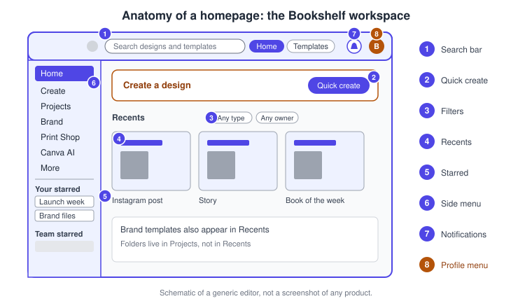
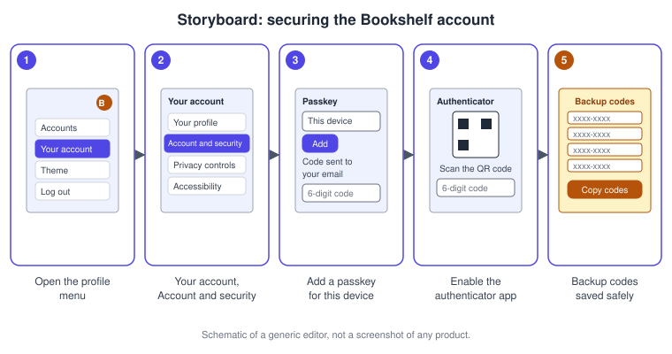
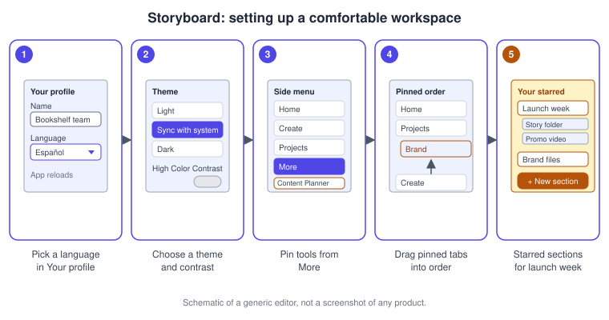
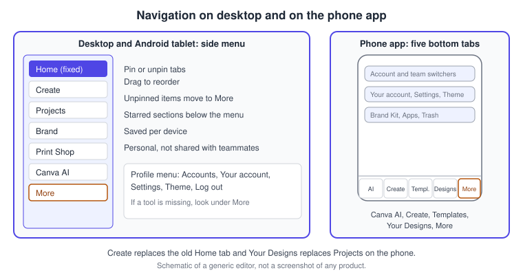
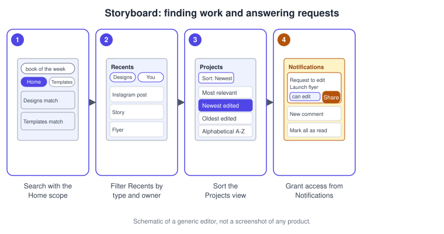

Account, Homepage and Navigation
|
This content was generated with the assistance of AI and should be verified against the official documentation before being relied on in production. |
This page was checked against the official Canva Help Center on 2026-11-07. It covers everything that happens before you open a design: creating and securing the account, setting the profile, language and theme, and finding your way around the homepage and the side menu on the web, in the desktop app and in the phone app. The product is Canva itself, the account and homepage layer that every other product of the Visual Suite (designs, presentations, docs, whiteboards, video, websites, Sheets, Canva Code, Forms and email) opens from; see Introduction and Product Family for the map of those products.
Every feature on this page is available on Canva Free. Account creation is free, and passkeys, multi-factor authentication, the account switcher, notifications, navigation customisation and the privacy controls do not depend on a paid plan. Two details depend on the account type rather than on a price: multi-factor authentication is not available for accounts managed through single sign-on, and the organisation-level data controls are for admins of Enterprise, Campus or District organisations. Prices and the full feature grid are on Canva pricing, and Plans, Pricing and the AI Allowance explains them in detail. The AI entry point on the homepage, Canva AI, is the Canva AI 2.0 assistant, which was announced as a research preview on 2026-04-16 and is documented in the Help Center without a preview label; no general availability date is published, and what you see depends on your account and plan. The assistant itself is covered in the Canva AI assistant page.
Canva is continuously deployed and the Help Center states that navigation changes are rolling out gradually. Its own account articles carry a banner saying that some steps may not match what you see, and that if you cannot find Canva AI, your profile photo or your Print cart on the homepage you should open More. For that reason this page names controls by label and describes locations in words, and its drawings are schematic.
The running example is Bookshelf, the book catalogue and reading-list app designed in the Figma sub-section. The procedures at the end of the page create the Bookshelf team’s account, protect it, tune the workspace for the launch campaign and find the campaign’s files again.
The homepage in one picture
The homepage is the first screen after you log in. It has a search bar across the top, a side menu on the left, a Create a design entry for starting new work, and the content area that lists your recent designs and Brand Templates. Starred sections sit under the side menu, and the notifications bell and your profile menu are at the top right. In the editor the same menu is one click away: the menu icon at the top left of the editor opens the homepage menu without leaving the design, and Home opens the full homepage.

-
The search bar searches your designs and templates.
-
Create a design starts a new design and lists starred and Brand Templates.
-
The filters narrow Recents by type and owner.
-
Recents lists recently opened designs and Brand Templates.
-
Your starred and Team starred sections collect the files you use most.
-
The side menu lists the tools you have pinned.
-
Notifications show activity on your work.
-
The profile menu holds accounts, settings, theme and log out.
Creating an account and logging in
An account is the identity that owns your designs, uploads, folders and Brand Kits, and the thing that plans, teams and the Affinity apps attach to. You can create it with your email address or with another identity provider, and you can add more than one sign-in method later.
Sign-in methods
The Help Center lists the methods that Canva currently supports. Some are regional and some may be missing in your country.
| Method | Notes |
|---|---|
Email address |
Canva sends a code to the address to finish sign-up. Temporary or disposable email addresses are not accepted. You can set a password later in the account settings. |
Work email address |
Offered under Continue another way, then Continue with work email. |
Google, Facebook, Apple, Microsoft |
A social sign-in needs no Canva password. Choosing Continue with Google is treated as permission to create or access an account, so if no active account exists for that address Canva creates one automatically and this cannot be prevented. |
ChatGPT |
Continue with ChatGPT signs you up or in. The email must be verified once. If the ChatGPT email matches an existing Canva account you are logged in to it and no duplicate is created. After connecting, it appears as a connected login method in your settings. It is not available on canva.cn. |
Phone number |
Offered in India only; the six-digit verification code arrives by WhatsApp or SMS, with a daily limit on codes. |
Regional methods |
LINE and Yahoo! (Japan only), Kakao Talk and Naver (Korea only). |
Single sign-on |
Organisations that use SAML sign-in log in through their identity provider; see Administration, Enterprise and Security. |
If a Canva account already exists for the email address you are using, the sign-up page reports that the account exists. Log in instead, reset the password, or use the method with which you originally signed up. Logging in with a different method that uses the same email address reaches the same account.
Passkeys
A passkey lets you log in with a fingerprint, a face scan or your device screen lock instead of typing a code. A limit of one passkey can be created per device, and one must be created on each device you want to use this way. You create it from the profile menu: open Settings or Your account, go to Account and security, and under the passkey sub-section select Add. Canva emails a code to your address, you enter it, and the passkey appears in the list. When you next log in as a returning user you are prompted automatically to verify with the same method. If a passkey fails, the usual causes are that it was removed, or that it was created on another device; log in with your original method, remove the stale passkey from Account and security, and create a new one. A passkey that is synchronised through iCloud, Google Password Manager or 1Password becomes available after you log in on the new device.
Multi-factor authentication
Multi-factor authentication (MFA) asks for a six-digit code from an authenticator app each time you log in. Each code is valid for 30 seconds. Three conditions apply: MFA is not available for accounts managed through single sign-on, the account needs a password (set one under Account and security first), and the account email should be verified. Backup codes can be generated at the same place; each can be used once, and Regenerate replaces a lost set. If codes are rejected, the first checks in the Help Center are that the device clock syncs automatically and that the account entry in the authenticator app is the right one. The Help Center article also describes disabling the authenticator app or SMS verification from the same section.
Protecting and ending sessions
Canva checks new passwords against known breaches and asks for another one if yours appears in a third-party breach. The account protection article recommends a password manager, a unique password of at least eight characters, social sign-in so that you have no password to leak, MFA, and signing out of all devices after using a shared computer. Log out in the profile menu ends only the current browser or device session. Sign out from all devices, under Account actions in Account and security, ends every session. The same section is where Delete account lives: deleting is permanent after a 14-day period that you can cancel by logging in again, it removes designs, folders, templates, uploads, teams and apps you created, and it also removes your access to Affinity. An active paid subscription is not cancelled automatically, so cancel it first.
Sources: Canva Help Center: Creating and logging in to your Canva account, Canva Help Center: Log out of Canva and Canva Help Center: Protect your account

Your profile
Your account in the profile menu opens a set of pages: Your profile, Account and security, Privacy controls, Accessibility and Message preferences. In Your profile you can change the account name, choose what you will use Canva for (the choice saves automatically) and upload, change or remove the profile photo. If you want your name to show properly in the emails Canva sends when you invite people or share a design, use letters only in the account name. Members of a Canva Education team cannot change their photo (students) or may be limited by their school. If you see Team profile instead of your own, use the account menu and Your account, then Your profile, to reach your personal photo.
Language
The Canva interface is available in many languages, and choosing a local language also unlocks local fonts and templates. Open Your account, Your profile, scroll to Language and pick the language from the dropdown; the app reloads in it and the change saves automatically. Before you log in, use the globe-icon language option in the footer of the homepage. This is a different setting from the design locale: the screen reader language of a design is set in the editor under File, Settings, Locale settings, and it does not change the language of the interface. Translating the content of designs is a feature of its own, see Resize, Bulk Create and Translate.
Theme and high contrast
By default Canva follows the appearance of your device. In the profile menu choose Theme and then Light, Sync with system or Dark; the same drop-down is under Your account, Accessibility. The theme changes the interface only, never the colours of your designs, so check a design’s own colours against both backgrounds when the audience uses dark mode. High Color Contrast, in the same Accessibility page, removes the gradient from the editor header and strengthens the border colour. The Accessibility page also holds the video autoplay setting and the option to keep on-screen messages longer; see Accessibility in Canva.
The side menu and the search bar
Search
The search bar at the top of the homepage has two scopes. Select Home to search your designs and templates together, or Templates to search templates only, then type keywords and press Enter. Results from your own content can be narrowed by owner and date, and sorted by most relevant, date edited or name. The default All projects view shows folders, designs and Brand Templates; images, videos and other uploads appear when you search or filter for them, and nothing is deleted or moved when they are hidden from that default view.
The tools in the side menu
The Help Center names these entries in the side menu.
| Entry | What it opens |
|---|---|
Create |
Starts a new design. |
Projects |
Your folders, saved designs, and uploaded media and files; see Projects, Folders and File Management. |
Brand |
Your Brand Templates and Brand Kits; see Brand Kit and Brand Voice. |
Print Shop |
Print products. |
Canva AI |
The prompt-driven assistant that generates and edits designs, images and videos and helps brainstorm ideas. |
More |
Other tools: Apps, Grow, Content Planner, Design School and Dream Lab. |
Canva AI is in the left menu; if it is not there, open More and look for it. The glowed-up homepage also introduced quick create (a Create a design entry where you pick or search a template and see starred and Brand Templates), contextual notifications inside the menu, and a Your starred area that you can divide into your own sections.
Customising the primary navigation
On desktop and on Android tablets you can choose which tabs appear in the side menu. Home cannot be moved or unpinned. To add a tab, open More and select the tab you want; to remove one, hover over it and select the Unpin icon. Unpinned items go to More, and you can drag pinned tabs into the order you prefer; changes save automatically. More also appears on its own if the window is small or if your account has more features than fit in the side panel. Four details are worth knowing. Customisation is not available on phones yet, and on an iPad you can reorder but not fully customise. Customisations are saved per device, so your desktop menu does not change your phone. They are personal and never change a teammate’s navigation. And if you have not customised anything, Canva may adjust the menu in future updates based on usage.
Starred sections
Under the side menu, Your starred collects the designs and folders that you star. Select the plus icon to create a custom section, type its name, optionally choose an emoji, and drag starred items into it; the more icon renames or deletes a section. Team starred sits below it and shows what the team owner, an admin or a brand designer starred for the team.
Recents, filters and sorting
Recents, reached from Projects then Recents, is a dedicated page listing recently opened designs and Brand Templates. Folders are not shown there and remain in Projects. The Type filter offers Any type, Designs, Brand templates and Folders, and the Owner filter offers Any owner, You and Shared with you. Filters do not persist after you leave, which is intentional so that you see everything when you return. In All projects, the Sort By control offers Most relevant, Newest edited, Oldest edited, Alphabetical (A-Z) and Alphabetical (Z-A), and you can switch between list and grid view. Alphabetical sorting applies only to your 200 most recently opened designs, and filtering and sorting need an internet connection.

Accounts and teams
The account switcher
The account switcher saves several accounts on one device, for example a personal account and the Bookshelf team’s account, so you can move between them without logging out. Open the profile icon, go to Accounts and choose Add another account; a new tab asks you to log in with the other account. To switch, open the profile icon, go to Accounts and select the account. To forget one, go to Accounts, then Manage Accounts, and choose the accounts to remove. The Help Center says there is no specific limit, that Free, Pro, Team and Enterprise accounts can all be saved, and that each account keeps its own settings. If you belong to more than one team, the profile menu also lists your teams so you can switch between them.
Notifications
Select Notifications (the bell) on the homepage. Selecting an item takes you to the design or folder it concerns; hover and click the check icon to mark one as read (long-press and choose Mark as read on a phone), or use Mark all as read. Canva notifies you about shared designs and folders, design access requests, comments and tasks, team access and invite requests, design approval requests and responses, Brand Kits or templates being created and published, and activity by your team admin and owner. A design access request can be answered straight from the notification: choose can edit, can comment or can view in the dropdown and select Share. The Help Center states that disabling in-app notifications is not currently supported. Email and phone notifications are controlled under Message preferences: the Tips and News tab for marketing messages (turn them off, choose weekly or monthly, or snooze for three months) and the Account tab for team activity, research and sales communication. Account and security messages cannot be switched off, and changes may take up to three business days.
Privacy controls
Your account then Privacy controls lists the permissions you can switch on or off, each with a description and a Learn more link to the Trust Center. A lock icon beside a preference means you cannot change it, because you belong to a managed team or because of your account type. Admins also have organisation-level controls under Settings, Data and Privacy, such as allowing team members to temporarily share affected designs with Canva Support. For Enterprise, Campus and District organisations, admins can set a data residency preference (no preference, United States or European Union); new data then goes to the chosen region and supported existing data migrates over 30 days or more, during which the control is locked. Administration is covered in Administration, Enterprise and Security.
Desktop and mobile
The web app, the desktop app and the phone apps share an account but not an identical layout. The big differences are listed here, and desktop and offline behaviour has its own page, Desktop, Mobile and Offline.

The phone app has five tabs at the bottom of the screen: Canva AI, Create (formerly Home), Templates, Your Designs (formerly Projects) and More. Create shows Quick Create shortcuts instead of recent designs, which moved to Your Designs, where a dropdown next to All projects filters and a search bar finds a design. More is one page: the account switcher (with a team switcher below it for multi-team users) at the top, then products, Your account (profile, security and privacy), Settings (team and billing options), Theme, help and feedback, Brand Kit, Apps, Design School and Trash. The Canva Print cart also moved into More, and Free users see an option to try Canva Pro at the top. Educators also see Classroom. Primary navigation customisation is desktop and Android tablet only, and pinned items do not sync between devices. The mobile apps are named Canva Classic and Canva Lite in the Help Center.
Keyboard shortcuts
Two shortcuts matter outside a design; the rest belong to the editor and are listed in Keyboard Shortcuts and Quick Actions.
| Action | macOS | Windows |
|---|---|---|
Open quick actions in the editor |
/ or Cmd E |
/ or Ctrl E |
Toggle the side panel in the editor |
Cmd / |
Ctrl / |
Move focus to the canvas |
Cmd F2 |
Ctrl F2 |
Move focus to the editor toolbar (with a selection) |
Cmd F1 |
Ctrl F1 |
Move to the next surface |
Cmd F6 |
Ctrl F6 |
Common mistakes
-
Looking for a tool that has moved. Content Planner, Apps, Grow, Design School and Dream Lab live under More unless you pin them, and Canva AI, your profile photo and the Print cart may be under More while the navigation change rolls out.
-
Expecting a customised menu on every device. Pins are saved per device and are personal; nobody else sees them.
-
Setting MFA before a password exists. MFA needs a password, and it is not offered for single sign-on accounts.
-
Creating a second account by accident. Choosing Continue with Google for an address with no account creates one. Use the same method every time or add a passkey.
-
Losing the backup codes. Store them in a password manager; regenerate them from Account and security if they are lost.
-
Reading Recents as a file listing. Folders are not shown in Recents; use Projects.
-
Expecting filters to stick. Filters reset when you leave and need a connection.
-
Confusing the interface language with the design locale. The first is in Your profile, the second in the editor’s Locale settings.
-
Deleting an account to cancel a plan. Deleting does not cancel a subscription.
Recent changes
| Date | Change | Effect on this page |
|---|---|---|
2025-04-11 |
Visual Suite 2.0 announced at Canva Create |
One format for designs, docs, whiteboards, video and websites opens from the same homepage. |
2025-10-30 |
Canva Business replaced Teams for new sign-ups |
The profile menu and account switcher still list older Team accounts; see Plans, Pricing and the AI Allowance. |
2026-04-16 |
Canva AI 2.0 announced as a research preview |
Canva AI has its own entry in the side menu and in the phone tabs. |
Rolling out, no date published |
Side menu customisation with pinning, reordering and More |
Desktop and Android tablets only, saved per device. |
Rolling out, no date published |
Five phone tabs: Canva AI, Create, Templates, Your Designs, More |
Home became Create and Projects became Your Designs. |
Rolling out, no date published |
Dedicated Recents page with type and owner filters |
Folders stay in Projects. |
Corrections to older guides
The two books consulted for this sub-section, Canva For Dummies by Jesse Stay (John Wiley & Sons, 2025) and Canva for Beginners by Yellow Pen (2024), describe an earlier layout. Their concepts of sign-up, a homepage hub and account settings still hold, but these statements are outdated as of 2026-11-07.
| Older statement | Current state |
|---|---|
The profile and settings are reached from a gear icon in the top bar of the homepage |
Settings and account pages are reached from the profile menu: Your account for profile, security, privacy controls, accessibility and message preferences, and Settings for team and billing options. |
A Home tab is the central hub, with recent designs listed on the phone’s home screen |
On desktop Home is the fixed first tab of a customisable side menu. On the phone the Home tab is now Create, and recent designs are under Your Designs. |
Sign-up is described with email and a few social providers |
ChatGPT sign-in, a work email option, regional phone sign-in, passkeys and an authenticator app are now documented. |
Plans are Free, Pro and Teams |
Canva Business replaced Teams for new sign-ups on 2025-10-30; see What Changed Since Older Guides. |
AI is reached through the Magic Studio tools |
Canva AI is a separate entry in the side menu and phone tabs. |
Procedures on the Bookshelf scenario
Create and secure the Bookshelf account
-
Go to canva.com and select Sign up.
-
Choose Continue with email, or Continue another way then Continue with work email, and enter the address you want to use for the Bookshelf team.
-
Enter the account name, such as Bookshelf Team, and select Continue.
-
Enter the code sent to your email.
-
Open the profile menu, then Your account, then Account and security, and set a password.
-
Under the passkey sub-section, select Add and enter the emailed code to create a passkey for this device.
-
Under Multi-Factor Authentication (MFA), next to Authenticator app, select Enable and enter your password.
-
Scan the QR code, enter the six-digit code, and select Enable authenticator app.
-
Select Copy codes, store the backup codes in a password manager, and select Finish setup.
Tune the workspace for the launch campaign
-
Open the profile menu, then Your account, then Your profile, and set the account name and the purpose.
-
In the Language section choose the interface language.
-
In the profile menu choose Theme and pick Sync with system.
-
On the homepage open More, and pin Content Planner and Brand so that they are in the side menu.
-
Drag Brand above Print Shop and release to save the order.
-
Under Your starred, select the plus icon, name a section Launch week and drag the campaign folder into it.
Find the campaign files and answer an access request
-
In the search bar select Home and type the words "book of the week", then press Enter.
-
Open Projects, then Recents, and set Type to Designs and Owner to You.
-
Back in Projects, open All projects, choose Sort By and select Newest edited.
-
Select Notifications, find a request to edit the launch flyer, choose can edit from the dropdown and select Share.
-
Select Mark all as read when you have finished.

References
-
Canva Help Center: Creating and logging in to your Canva account
-
Canva Help Center: Log in faster and more securely with a Passkey
-
Canva Help Center: Get to know the glowed up editor and homepage
-
Canva Help Center: Filter and sort your designs on the homepage
-
Canva Help Center: Manage email subscriptions and mobile notifications